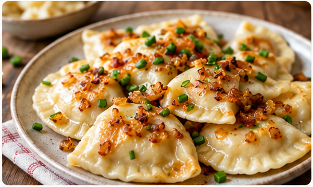
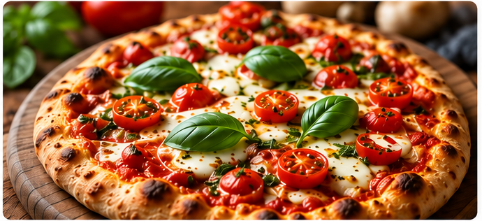

Przepis jest dobry, kiedy ktoś go ugotował.
kuking.pl

Pierogi ruskie po babci Halinie
90 minut6 porcji
kuking.pl

UgotowałemPizza z pieca w ogrodzie
Ugotowała Basia, z przepisu Piotra
kuking.pl
Pokaż, co dziś ugotowałeś.
Twój zeszyt z przepisami i ludzie, którzy naprawdę gotują.
Kuking to miejsce, w którym przepis po babci zostaje spisany i nie ginie przy przeprowadzce.
Wejdź i przeczytaj. Do czytania nie trzeba konta.
kuking.pl
Prowadzimy to na własną rękę.
Polski serwis domowego gotowania.
kuking.pl
kuking.pl